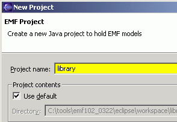
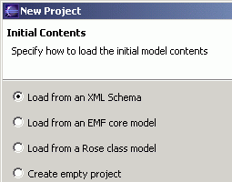
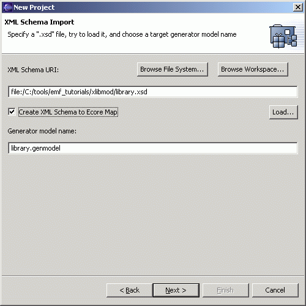

Generating an EMF Model using XML Schema
Top
Previous: Prerequisites
Next: Generating the EMF Model Code
Step 1: Importing the Model from XML Schema
Use the XML Schema file you saved earlier:
library.xsd as a sample model.
Create a new Ecore model project in the workspace:
-
Bring up the "File/New/Project..." dialog.

-
Select "Eclipse Modeling Framework" and "EMF Project". Click the
"Next" button.

-
Give the project a name, say, "library". Then, click the "Next"
button.

-
Select "Load from an XML Schema" and click the "Next" button.

-
Click on the "Browse File System..." or "Browse Workspace..." button to
locate and load the XML schema file on your system. Alternatively, you can
enter the XML schema file's location directly in the "XML Schema URI" entry
field and then click on the "Load..." button to load it. (Note: If you locate
the schema using either "Browse File System..." button or "Brose Workspace..."
button, you do not need to click on the "Load..." button.)

-
After the XML schema file is loaded, a default GenModel name will be suggested.
You can change the name in the "Generator model name" entry field if you wish.
You can also select "Create XML Schema to Ecore Map" to generate a mapping file
that maps from an XML Schema to Ecore, with an extension of ".xsd2ecore". If you
do not select this option, the mapping file is not generated.
Click the "Next" button.

-
Select the package for which you want to generate an EMF model - In general,
there can be many packages within a single schema. However, in this case,
there is only one package, "library". Click the "Finish" button.

-
Three files will be created: (1) A mapping file that maps from an XML Schema to
Ecore, with an extension of ".xsd2ecore", (2) an Ecore model, with an extension of
".ecore", and (3) a GenModel, with an extension of ".genmodel". The GenModel, which
controls code generation for the model appears in the main view.

The Ecore model "com.example.library.ecore" has the package name as its file
name. The package name comes from the value of the EPackage's nsPrefix attribute is
derived from the schema's target namespace (if the schema has a target namespace),
or from the URI file path of the schema document if the schema does not
contain a target namespace. In this sample, the "library.xsd" file includes
a targetNamespace attribute that has a value of "http://www.example.com/library".
Therefore, the nsPrefix attribute for the "Library" is set to "com.example.library".
Top
Previous: Prerequisites
Next: Generate the Model Code